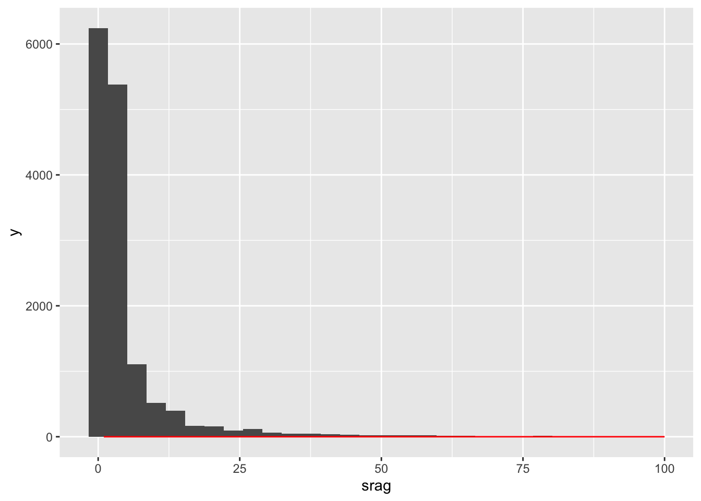

| co_mun_res | sg_uf | id_mn_resi | semana_epi | semana_epi_ano | apenas_covid | covid_sintomas | srag | name_muni | code_state | abbrev_state | mean_ppm25 | median_ppm25 | max_ppm25 | dias_acima_25 | 5-11 anos | 12-17 anos | 18-29 anos | 30-39 anos | 40-49 anos | 50-59 anos | 60-69 anos | 70-79 anos | 80-89 anos | 90+ anos | total_vacinadas | muni_nm | uf | idhm | espvida | rdpc | gini | pop | porte | pop_uf | pct_vacinada |
|---|---|---|---|---|---|---|---|---|---|---|---|---|---|---|---|---|---|---|---|---|---|---|---|---|---|---|---|---|---|---|---|---|---|---|---|
| 110001 | RO | ALTA FLORESTA D’OESTE | 168 | 12 | 0 | 1 | 1 | Alta Floresta D’oeste | 11 | RO | 11.433123 | 11.323818 | 17.33697 | 0 | 0 | 0 | 0 | 0 | 0 | 0 | 0 | 0 | 0 | 0 | 0 | ALTA FLORESTA D’OESTE | RO | 0.641 | 70.75 | 476.99 | 0.58 | 22429 | p | 1515023 | 0 |
| 110001 | RO | ALTA FLORESTA D’OESTE | 177 | 21 | 0 | 0 | 1 | Alta Floresta D’oeste | 11 | RO | 8.171955 | 8.996928 | 11.14333 | 0 | 0 | 0 | 0 | 0 | 0 | 0 | 0 | 0 | 0 | 0 | 0 | ALTA FLORESTA D’OESTE | RO | 0.641 | 70.75 | 476.99 | 0.58 | 22429 | p | 1515023 | 0 |
| 110001 | RO | ALTA FLORESTA D’OESTE | 182 | 26 | 0 | 0 | 1 | Alta Floresta D’oeste | 11 | RO | 7.231334 | 6.175623 | 12.74430 | 0 | 0 | 0 | 0 | 0 | 0 | 0 | 0 | 0 | 0 | 0 | 0 | ALTA FLORESTA D’OESTE | RO | 0.641 | 70.75 | 476.99 | 0.58 | 22429 | p | 1515023 | 0 |
| 110001 | RO | ALTA FLORESTA D’OESTE | 183 | 27 | 2 | 2 | 2 | Alta Floresta D’oeste | 11 | RO | 10.973564 | 11.009051 | 16.53389 | 0 | 0 | 0 | 0 | 0 | 0 | 0 | 0 | 0 | 0 | 0 | 0 | ALTA FLORESTA D’OESTE | RO | 0.641 | 70.75 | 476.99 | 0.58 | 22429 | p | 1515023 | 0 |
| 110001 | RO | ALTA FLORESTA D’OESTE | 185 | 29 | 1 | 1 | 1 | Alta Floresta D’oeste | 11 | RO | 8.022077 | 7.962907 | 10.23276 | 0 | 0 | 0 | 0 | 0 | 0 | 0 | 0 | 0 | 0 | 0 | 0 | ALTA FLORESTA D’OESTE | RO | 0.641 | 70.75 | 476.99 | 0.58 | 22429 | p | 1515023 | 0 |
| 110001 | RO | ALTA FLORESTA D’OESTE | 186 | 30 | 3 | 3 | 4 | Alta Floresta D’oeste | 11 | RO | 6.224856 | 6.434043 | 11.35863 | 0 | 0 | 0 | 0 | 0 | 0 | 0 | 0 | 0 | 0 | 0 | 0 | ALTA FLORESTA D’OESTE | RO | 0.641 | 70.75 | 476.99 | 0.58 | 22429 | p | 1515023 | 0 |
Engolindo Fumaça - atualização dos dados
Observações sobre o modelo
- Unidade observacional: município
- Variável resposta: número de internações (por Covid / SRAG) por semana
- Variáveis explicativas:
- pessoas vacinadas (% sobre UF)
- pm25 (testar média, mediana, máximo, dias na semana acima do limite recomendado)
- tamanho do município (por população)
- quantidade de leitos existentes (por município e mês)
- precipitação
- focos de queimada
- UF como variável de efeito aleatório (considerando que não há independência entre os municípios de uma mesma UF)
Escopo
- Amazônia Legal
- 2017 a 2023
Distribuição dos dados
É importante ressaltar que a distribuição dos dados não é normal, uma suposição feita em modelos lineares mais simples. Alguns possíveis modelos são modelos de contagem como binomial negativa e Poisson, além de suas variantes com inflação de zeros, dada a dispersão esparsa dos dados e alta frequência de contagens nulas, como podemos verificar no histograma na Figura 1.

Possíveis análises
- Modelo de Séries Temporais
- Modelo de Sobrevivência semi-paramétrico
- Modelos mistos
- Poisson
- ZIP (Zero Inflated Poisson)
- Binomial Negativa
- ZINB (Zero Inflated Negative Binomial)